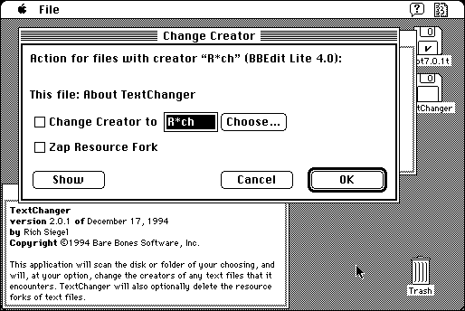

Download
TextChanger2.0.1.zip (41K) TextChanger 2.0.1 repackaged into a zipped hfs disk image and checksum file. The disk image can be mounted with Mini vMac.
TextChanger2.0.1.hqx (53K) TextChanger 2.0.1 in the original format.
copyright: Bare Bones Software, Inc.
mod date: Dec 17, 1994
license: free for non-commercial use
last known url
(gone)
“Will scan a disk or folder for text files, and allow you to selectively change their creators or delete the contents of their resource forks.” Requires System 7 or later. By Rich Siegel.

If you find these downloads useful, please consider helping the Gryphel Project, which hosts them.
Here are the md5 checksums for the downloads, signed with Gryphel Key 5:
--------- GRY SIGNED TEXT --------- 0d26acf572fa841a2018637a2090f627 TextChanger2.0.1.zip d99510426fa1d966d3a800b62cfa88a5 TextChanger2.0.1.hqx ------- BEGIN GRY SIGNATURE ------- Gry/4Xa8CFcUzxdN/IaYiNXne4SokdNHEmZHRZMbigAZzzQpwE6pVh1jE6s1PeO5 E9YETJOI8uIbHHmGWRr9Eou0Zc0xhRqFmZ0E8vkEWnHj+r2+76k3ku2NpKUsh99T t0JfJErCOglZR1jUvqlyGMIck30OPRleBpagJlUacpzHN+WmFwU8q3vClgku1hJg -------- END GRY SIGNATURE --------